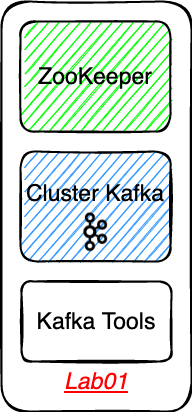
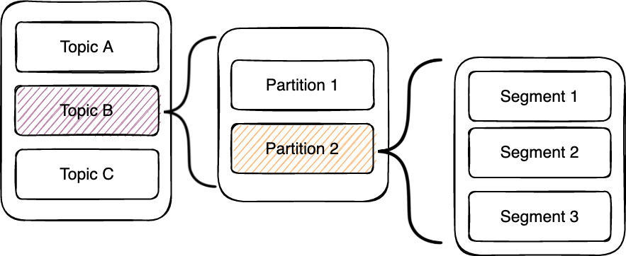
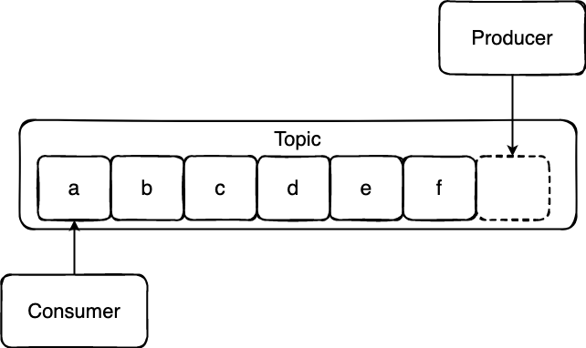
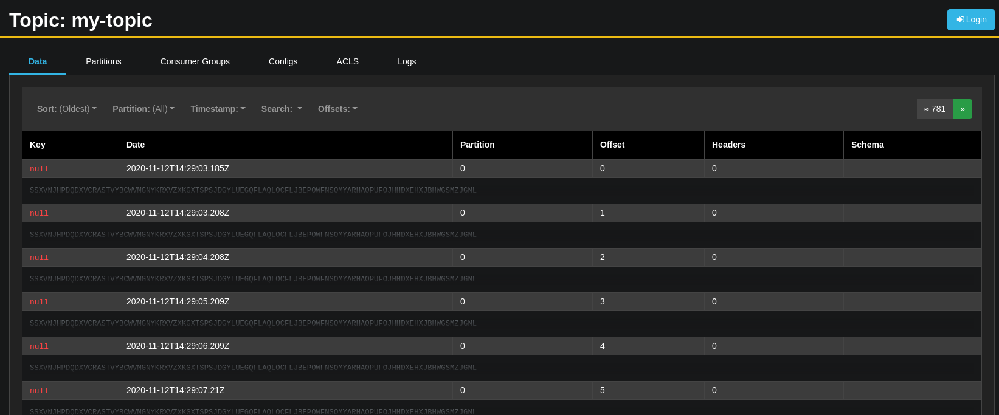
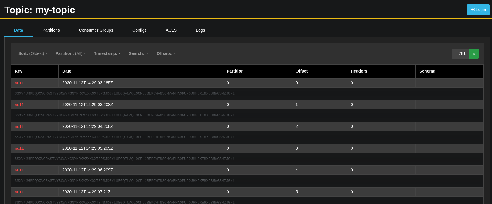
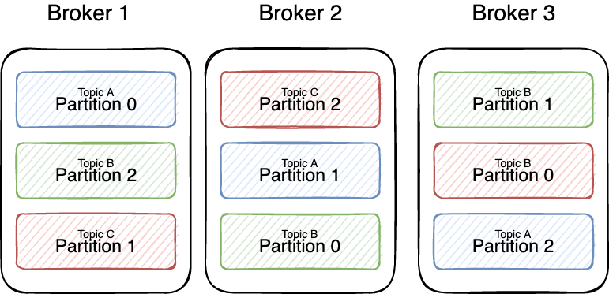

# Lab01 - Découverte Kafka, Zookeeper et AKHQ
# Rappel

- Pourquoi Zookeeper ?
- La fameuse KIP-500 : https://issues.apache.org/jira/browse/KAFKA-9119 (opens new window)
# Topic / Partition / Segment

- Topic : vue abstraite d'un ensemble de partitions qui vont idéalement contenir un ensemble de record d'un même type.
- Partition : permets de répartir les records en plusieurs espaces (partition) ce qui permets la scabilité de consommation et de production.
- Segment : une partition est répartie en plusieurs fichiers sur le disque, les records sont ajoutés au fil de l'eau
# Premier pas
- Création d'un topic via le conteneur
tools
Attention le broker ne permet pas la création de topic à la volée
KAFKA_AUTO_CREATE_TOPICS_ENABLE: 'false'
Se connecter dans le conteneur tools et créer un topic à l'aide de la ligne de commande
docker exec -it tools bash
# Dans le conteneur tools
kafka-topics --if-not-exists --bootstrap-server kafka:9092 --create --topic demo --replication-factor 1 --partitions 1
- Pourquoi le replication factor de 1 ?
- Pourquoi le partition de 1 ?
- Pourquoi le bootstrap-server ?
- Verifier avec la CLI le topic créé
kafka-topics --list --bootstrap-server kafka:9092
- Démarrer un producer à l'aide de la ligne de commande
kafka-console-producer --broker-list kafka:9092 --topic demo
- Démarrer un consumer à l'aide de la ligne de commande
kafka-console-consumer --bootstrap-server kafka:9092 --topic demo --from-beginning

- Pourquoi le
--from-beginning?
# AKHQ (anciennement KafkaHQ)
Pour consulter AKHQ en local http://akhq:8080/ (opens new window)
Produit local Ch'ti !
Développé par
@tchiotludoWep App open source qui expose une interface permettant :
- Monitorer son cluster (broker, topics, consumer group, etc.)
- Visualiser le contenu de la schéma registry
- Lire / Écrire de la donnée
- etc.

 

# Topic Partition avec replication factor à 3
